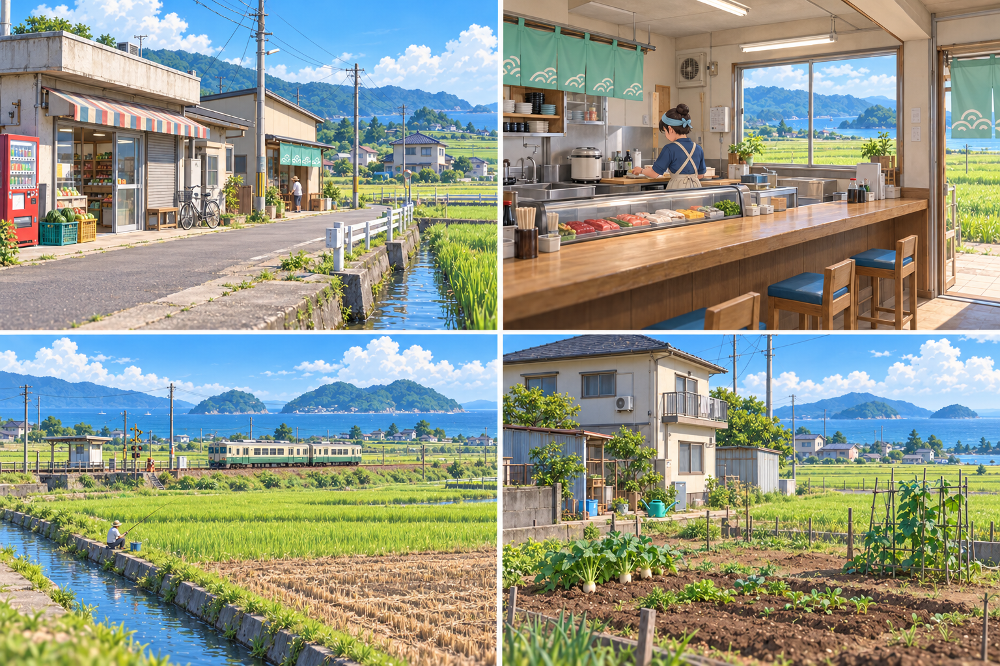
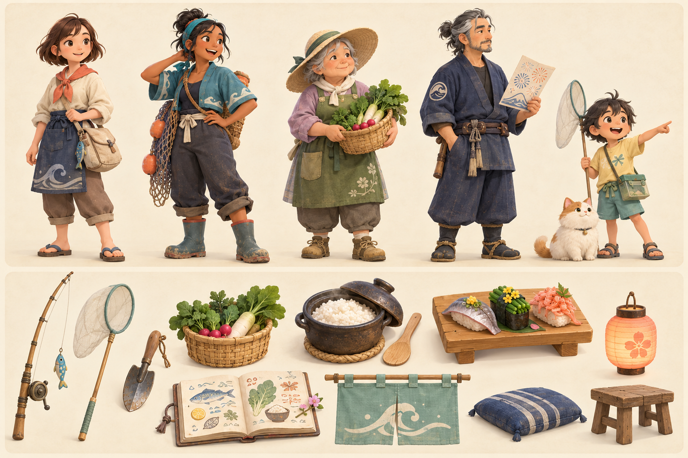

一间小店，一整个夏天。
晴汐小镇：
一间寿司屋
回到依山临海的小镇，把白天收获的鱼和蔬菜做成寿司。认识邻居、装点自己的家，再让停办多年的海湾花火大会，重新亮起来。
3D 开放小镇采集与种植寿司店经营村民关系四季生活
C01 / 花火主视觉 v0.3。大片田地分隔普通住宅与小店；地方列车沿海经过，近海绿岛与少量主花火形成重点。
01
把日常变成料理
钓鱼、挖野菜、种蔬菜，也可以去进货。研究有规则的配方，用当季食材决定今日菜单。02
把小店变成归处
经营收入换来新家具与自己的房子；食客的口味和故事，让菜单有了个人意义。03
把关系变成星光
支线带回的不只是奖励。修好的摊位、愿望灯和熟悉的人，会在花火那晚一起出现。白天的小镇，晚上的家

C02 / 场景方向 v0.3。平顶杂货店、单坡顶寿司小店、田野铁路与海岛、普通民宅菜园。不同建筑年代与连续农田构成乡间生活感；本图不作为精确关卡布局。
一天的节奏
看天气和留言 → 自由采集 / 种植 / 进货 → 研究与备料 → 傍晚开店 → 朋友来访 → 装修、整理与休息。
没有必须每天营业的压力；也可以把今天留给散步。
看天气和留言 → 自由采集 / 种植 / 进货 → 研究与备料 → 傍晚开店 → 朋友来访 → 装修、整理与休息。
没有必须每天营业的压力；也可以把今天留给散步。
认识会留在记忆里的人

C03 / 第一组角色与道具方向，保留上一轮版本。完整首版规划十位关系村民；后续再对齐新的环境风格与生产规格。
让烟花成为自己的故事
重开门帘
从第一条鱼和第一份握寿司开始，找回外婆食谱里的批注，了解大家的口味。重新相聚
追寻旧大会的照片，修复摊架，协调食材，为花火师朔留出愿意重新开始的空间。海湾开花
先参与夜市，再走到观景点。音乐响起，朋友与任务成果进入画面，最后是映满海面的金雨。四季都有想出门的理由
春 · 春芽野餐夏 · 海湾花火秋 · 丰收月见冬 · 雪灯小市
主线可以跨季推进，错过一天不会失去故事。花火高潮既有自由视角，也有电影镜头与低闪烁模式。
可筛选的美术资源清单
157 项制作任务。P0 为首个可玩版本，P1 为完整首版增量，P2 为可选。数量有不同单位，不能直接相加当作模型数量。除三张概念板外，其余为待制作计划。
| ID | 类别 / 优先级 | 制作项 | 数量 | 区域 | 规格 / 状态 | 验收 |
|---|